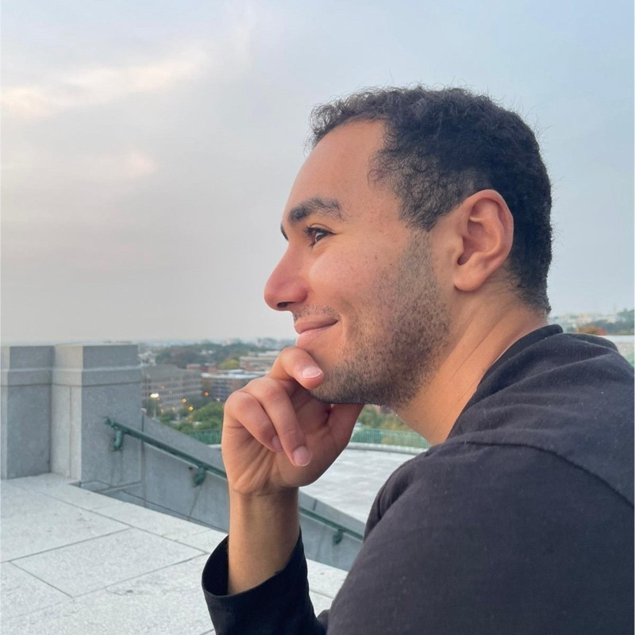

Research Scientist · Meta FAIR
I work on self-supervised learning and world models, with a focus on Joint-Embedding Predictive Architectures (JEPA) — a framework for learning abstract representations of the world by predicting in latent space rather than pixel space. My work on I-JEPA and V-JEPA has been covered by Quanta Magazine, CNBC, Reuters, Fortune, La Presse, and others. I completed my PhD (ECE) at McGill University and Mila, the Quebec AI Institute, where I was supported by a Vanier Scholarship.
I am also the founder of YETE (Youth Engagement Through Engineering), a Canadian not-for-profit advancing youth education. We have collaborated with the English Montreal School Board and the Kahnawà:ke Education Center to foster a self-guided constructivist approach to learning.

We're all here on this earth to help others; what on earth the others are here for, I have no idea. — W.H. Auden
Selected Publications
Doctoral Students Co-Advised at Meta
Gaoyue Zhou
Academic advisor(s): Lerrel Pinto and Yann LeCun
Emily Kaczmarek
Academic advisor(s): Tal Arbel
Wancong Zhang
Academic advisor(s): Yann LeCun
Artem Zholus
Academic advisor(s): Sarath Chander
Marcel Hussing
Academic advisor(s): Eric Eaton
Benno Krojer
Academic advisor(s): Siva Reddy
Open-Source Code
Official codebase for V-JEPA 2, a self-supervised video world model for understanding, prediction, and planning.
Official codebase for I-JEPA, a non-generative approach for self-supervised learning from images.
Official codebase for V-JEPA, a method for self-supervised learning of visual representations from video.
Official codebase for Masked Siamese Networks, a self-supervised learning framework for label-efficient image classification.
Official codebase for PAWS and SuNCEt, semi-supervised methods for learning visual features with limited labels.
Official codebase for Stochastic Gradient Push, a method for distributed deep learning over peer-to-peer networks.
Honours & Awards
Vanier Scholarship
NSERC
$150,000
The Vanier CGS plays an important role in fulfilling the Government of Canada's Science and Technology strategy to promote the development and application of leading-edge knowledge and attract and retain the world's top graduate students.
Alexander Graham Bell Scholarship
NSERC
$105,000
Awarded to the top-ranked doctoral students in Canada, to ensure a reliable supply of qualified personnel to meet the needs of Canada's knowledge economy.
McGill Engineering Doctoral Award
McGill University
$72,000
This award aims to recruit the best and brightest new doctoral students from all over the world.
Les Vadasz Doctoral Fellowship
McGill University
$48,000
Established in 2006 by the Vadasz Family Foundation to recruit outstanding students into the Faculty of Engineering's doctoral degree program.
Undergraduate Student Masters Award
McGill University
$35,000
Competitive recruitment funding to assist in attracting and retaining high caliber undergraduate students with demonstrated academic excellence, as well as applied research experience, into the Faculty's research Graduate Programs.
1st Place — Waterloo Hardware Hackathon
Google, O'Reilly, PCH
$55,000
Awarded $5,000 cash scholarship and $50,000 in product services. Developed a solution and prototype to provide Internet access to developing communities using a distributed data mesh with an offline search engine.
Rhodes Scholar Finalist
University of Oxford
One of 12 finalists selected for three available Rhodes Scholarships, an international post-graduate scholarship to study at the University of Oxford.
Graduate Mobility Award
McGill University
To support student engagement in international research experiences outside of McGill.
Graduate Excellence Fellowship
McGill University
Nomination for this award is at the discretion of the Department or School. Selection is based on the excellence of a student's academic and research record.
Ian McLachlin Prize for Entrepreneurship
McGill University, Faculty of Engineering
Established in 1998 by Ian McLachlin, B.Eng. 1960, to encourage Engineering students to undertake Entrepreneurial Studies.
Dean's Honour List
McGill University
Recognizes undergraduate students who rank in the top 10% of the Faculty of Engineering.
Les Vadasz Award in Engineering
McGill University
Awarded annually by the Faculty of Engineering to a student based on high academic standing, with a preference for interest in and contribution towards engineering sustainability and/or design.
Accenture Prize in Engineering and Science
McGill University
Awarded by the Faculty Scholarships Committees on the basis of academic excellence and demonstrated leadership qualities.
Faculty of Engineering Scholarship
McGill University
Awarded based on academic achievement to students in the top 5% of the Faculty. Granted by the Faculty of Engineering Scholarships Committee based on good academic standing.
Undergraduate Student Research Award
NSERC
Granted by the university and the Natural Sciences and Engineering Research Council of Canada, based on the student's academic record, research aptitude, and merit.
John Howard Ambrose Award
McGill University
Awarded by the Faculty of Engineering Scholarships Committee on the basis of merit to engineering students.
IEEE Signal Processing Society Winter School Scholarship
IEEE Signal Processing Society
Awarded by the IEEE Signal Processing Society on the basis of merit to engineering students.
John Green Memorial Award
McGill University
For the student with highest standing in the penultimate year of Honours Electrical Engineering. Awarded on the recommendation of the Department.
Christie Steinmetz Award
McGill University
Awarded to a second year student in Electrical Engineering on the basis of academic performance and demonstration of exceptional promise as an engineer.
McCaig Family Scholarship in Engineering
McGill University
Awarded by the Faculty of Engineering to undergraduate students who have completed at least one year of the B.Eng. program on the basis of high academic standing.